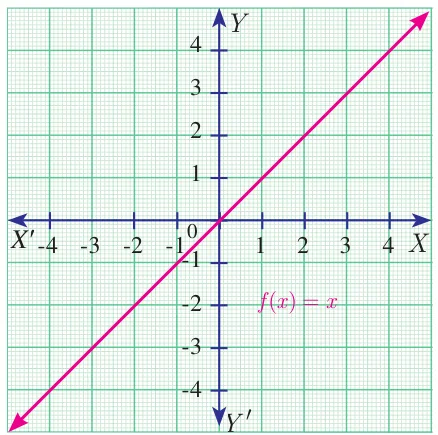
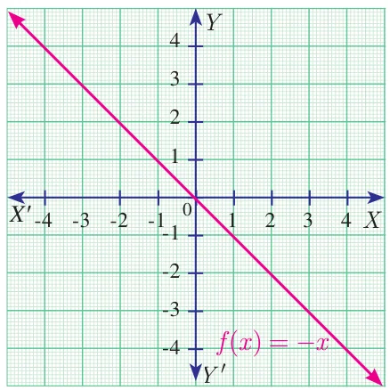
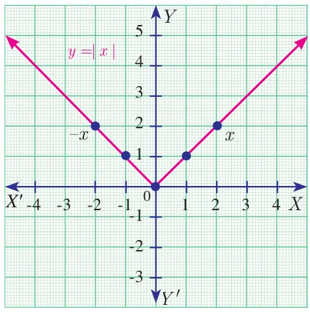
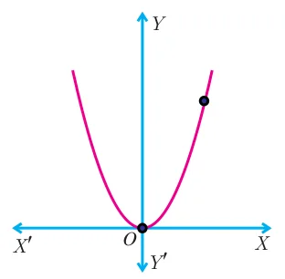
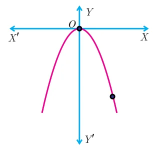
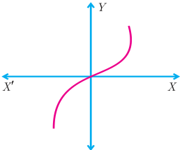
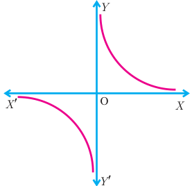
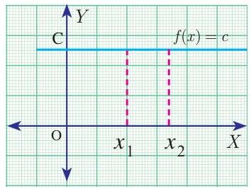

Graphs provide visualization of curves and functions. Hence, graphs help a lot in understanding the concepts in a much efficient way.
In this section, we will be discussing about the identification of some of the functions through their graphs. In particular, we discuss graphs of Linear, Quadratic, Cubic and Reciprocal functions.
1.10.1 Linear Function
A function \(f : \mathbb{R} \to \mathbb{R}\) defined by \(f(x) = mx + c\), \(m \neq 0\) is called a linear function. Geometrically this represents a straight line in the graph.
Some Specific Linear Functions and their graphs are given below.
| No. | Function | Domain and Definition | Graph |
|---|---|---|---|
| 1 | The identity function | \(f : \mathbb{R} \to \mathbb{R}\) defined by \(f(x) = x\) |  |
| 2 | Additive inverse function | \(f : \mathbb{R} \to \mathbb{R}\) defined by \(f(x) = -x\) |  |
1.10.2 Modulus or Absolute valued Function

\(f : \mathbb{R} \to [0, \infty)\) defined by \(f(x) = |x|\)
\(= \begin{cases} x; & x \ge 0 \\ -x; & x < 0 \end{cases}\)
Note
- Modulus function is not a linear function but it is composed of two linear functions \(x\) and \(-x\).
- Linear functions are always one-one functions and has applications in Cryptography as well as in several branches of Science and Technology.
1.10.3 Quadratic Function
A function \(f : \mathbb{R} \to \mathbb{R}\) defined by \(f(x) = ax^2 + bx + c,\ (a \neq 0)\) is called a quadratic function.
Some specific quadratic functions and their graphs
| Function, Domain, Range and Definition | Graph |
|---|---|
| \(f : \mathbb{R} \to \mathbb{R}\) defined by \(f(x) = x^2, x \in \mathbb{R}\). \(f(x) \in [0, \infty)\) |  |
| \(f : \mathbb{R} \to \mathbb{R}\) defined by \(f(x) = -x^2, x \in \mathbb{R}\). \(f(x) \in (-\infty, 0]\) |  |
1.10.4 Cubic Function

A function \(f : \mathbb{R} \to \mathbb{R}\) defined by \(f(x) = ax^3 + bx^2 + cx + d,\ (a \neq 0)\) is called a cubic function.
The graph of \(f(x) = x^3\) is shown in Fig. 1.48.
1.10.5 Reciprocal Function

A function \(f : \mathbb{R} - \{0\} \to \mathbb{R}\) defined by \(f(x) = \dfrac{1}{x}\) is called a reciprocal function (Fig. 1.49).
1.10.6 Constant Function

A function \(f : \mathbb{R} \to \mathbb{R}\) defined by \(f(x) = c,\ \forall\ x \in \mathbb{R}\) is called a constant function (Fig. 1.50).
Progress Check
- Is a constant function a linear function?
- Is quadratic function a one – one function?
- Is cubic function a one – one function?
- Is the reciprocal function a bijection?
- If \(f : A \to B\) is a constant function, then the range of \(f\) will have \(\underline{\qquad}\) elements.